Danesh Production
Website development, hosting, SEO and continuing digital support. Company communications through Google Workspace and Google Voice.
Web development / Systems integration
Read my contribution Public websiteAN INTERACTIVE PORTFOLIO
Connecting websites, people and operations through thoughtful integration and automation.
Explore the workflowA conceptual model of my approach.
Explore each layer. Follow the information.
Start with the journey: a clear website, useful content and a considered path from first visit to next action.
01 Understand the journey
02 Connect the moving parts
03 Keep people in control
02 / FROM INPUT TO OUTCOME
Choose a fictional scenario. Follow the steps, introduce an incomplete input and see how a review checkpoint changes the path.
INPUT / DEMO-001
This example is independent of client systems.
A reference is missing. Automatic progress has stopped for human review.
EVENT TRAIL
ReadyIllustrative simulation, not a client implementation. All records are fictional. AI-assisted labels describe a concept; this demo does not call an AI service, take payments or send messages.
03 / SKILL TO PRACTICE
Selected public work connects these capabilities to my responsibilities. Public websites show the deliverables; the linked case studies explain my contribution.

Website development, hosting, SEO and continuing digital support. Company communications through Google Workspace and Google Voice.
Web development / Systems integration
Read my contribution Public website
Storefront design and development, product content, landing pages, SEO, payment integrations and continuing order workflow improvements.
E-commerce / Workflow design
Read my contribution Public website
Product requirements, website structure, user journeys and coordinated technical delivery for the public website.
Product management / Requirements
Read my contribution Public website04 / THE NEXT CONNECTION
Contracts and continuing collaborations in systems integration, workflow automation and digital operations.
Discuss a project on LinkedIn